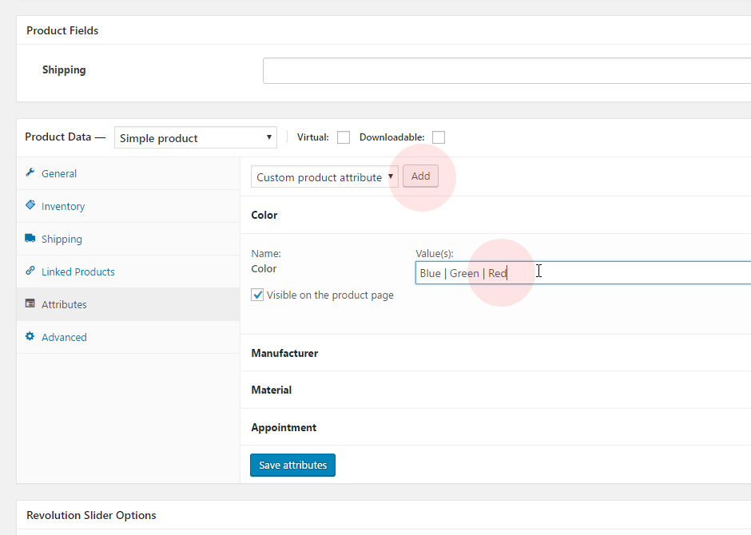
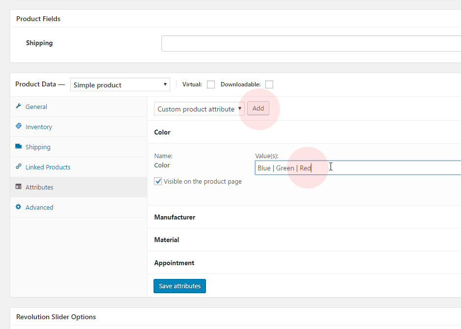
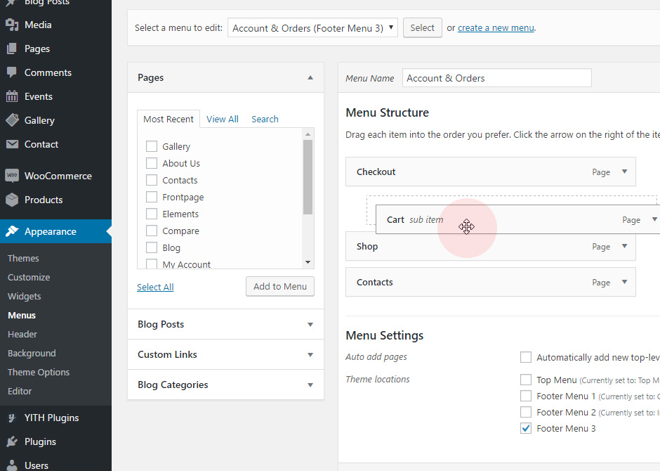

When you download the theme from ThemeForest, you will get an archive file in .zip extension.
You need to unzip that archive. When done, you should see Motor - Vehicles, Parts & Accessories WordPress WooCommerce Theme.zip (zip file name can be changed from version to version). Please, follow the steps below to install Motor Wordpress Theme.
How to Start using
Motor WordPress Theme
Motor WordPress Theme
Thank you for purchasing Motor WordPress Theme. Before you get started, please be sure to always check out this documentation. We outline all kinds of good information, and provide you with all the details you need know to use Motor WordPress Theme.
Second Step
Edit Content
Install Theme
Step 1 - Login to your WordPress Dashboard.
Step 2 - Go to Appearance > Themes. Click Add New button, located at the top of the screen or Add New Theme.
Step 3 - Click on Upload button at the top of the screen.
Step 4 - Choose Motor - Vehicles, Parts & Accessories WordPress WooCommerce Theme from your computer.
Step 5 - Wait while the theme is uploaded and installed then Activate the theme.
Step 6 - After activating the theme a notice should appear on the top of the screen, click on begin installing plugins.
Step 7 - Select all the plugin, change Bulk Actions drop to Install then click Apply.
Step 8 - Activate all plugins
Step 9 - Yaaaay! You are ready to use Motor Wordpress Theme, but don't forget about Demo Content!
It will really help you!
It will really help you!
Import Demo Content
Step 1 - Go to Tools > Demo Content Install
Step 2 - Click Install.
Step 3 - Wait
Done! Your theme is ready!
Theme Update
Updating the theme via WordPress is very similar to the install process via WordPress.
Follow the steps below to update your theme via WordPress:
Follow the steps below to update your theme via WordPress:
Step 1 - Log into your WordPress Dashboard
Step 2 - Go to Appearance > Themes
Step 3 - Deactivate the Motor WordPress Theme Theme by simply activating a different theme. Once you activate a different theme, you can delete the Motor theme
Step 4 - Delete the Motor Theme. Do not worry, your content will not be lost!
Step 5 - Then simply upload the new Motor WordPress Theme zip file in the Appearance > Themes section. Click on the Install Themes tab at the top and choose to upload the zip file.
Step 2 - Go to Appearance > Themes
Step 3 - Deactivate the Motor WordPress Theme Theme by simply activating a different theme. Once you activate a different theme, you can delete the Motor theme
Step 4 - Delete the Motor Theme. Do not worry, your content will not be lost!
Step 5 - Then simply upload the new Motor WordPress Theme zip file in the Appearance > Themes section. Click on the Install Themes tab at the top and choose to upload the zip file.
Use Page Builder
Read «Visual Composer» Documentation
Step 1 - Log into your WordPress Dashboard
Step 2 - Go to any page and click on Edit with Visual Composer
Step 3 - Click on Add Elements and select the Row
Step 4 - Click on the Edit This Row and select Row layout
Step 5 - Click on Add Elements and select the Iconbox
Step 6 - Drag and Drop the Iconbox to Column Row and start edit this element
Step 7 - Save changes
Edit Slider
Read «Slider Revolution» Documentation
Step 1 - Log into your WordPress Dashboard
Step 2 - Go to Revolution Slider add New Slider or edit the current slider
Step 3 - Create a new page and set it Full Width
Step 4 - Edit this page with Visual Composer and add a Row
Step 5 - Add a Text Block Element and put Shortcode of your slider
Step 6 - Save changes
Product Categories
Step 1 - Log into your WordPress Dashboard
Step 2 - Go to Products and choose click Edit on any product
Categories are managed from the Products > Categories screen
Similar to categories on your posts in WordPress, you can add, delete, and edit your product categories here. There are some added options on top of the normal category fields, you can also upload an image to be associated with the category:
Categories can also be reordered by dragging and dropping – this order will be used by default on the front end whenever the categories are listed. This includes both widgets and the subcategory view on product pages.
When you add a new product through Products > Add Product, you’ll be able to select this new product category from the list.
When you add a new product through Products > Add Product, you’ll be able to select this new product category from the list.
Catalog Filtres
Step 1 - Log into your WordPress Dashboard
Step 2 - Go to WooCommerce > Setttings
Step 3 - Click on Products Filter and add, move, enable/disable filtres
Step 4 - Save Changes
How to edit / add an attribute to any product
Step 1 - Log into your WordPress Dashboard
Step 2 - Go to Products and choose click Edit on any product
Step 3 - Edit price, shiping details, inventory and other attributes
 

Step 4 - Save changes
Menu Setup
Go to Appearance > Menus

The WordPress menu editor allows you to create multi-level menus using a simple 'drag and drop' interface. Drag menu items up or down to change their order of appearance in the menu. Drag menu items left or right in order to create sub-levels within your menu. To make one menu item a subordinate of another, you need to position the 'child' underneath its 'parent' and then drag it slightly to the right.
If your current theme supports custom menus, you will be able to add your new menu to one of the Theme Locations.
1) Scroll to the bottom of the menu editor window.
2) In the section titled Theme locations, click the check box for the location where you want your menu to appear.
3) Click Save menu once you've made your selection.
2) In the section titled Theme locations, click the check box for the location where you want your menu to appear.
3) Click Save menu once you've made your selection.
Upload your Logo
Step 1 - Go to Appearance > Theme Options
Step 2 - Go to Header > Choose File > Upload your Image
Step 3 - Save Changes
How to change Favicon
Step 1 - Go to Appearance > Customize
Step 2 - Go to Site Identity
Step 3 - Click on Select Image and Upload your Logo
Step 4 - Save Changes
Change Colors
Step 1 - Go to Appearance > Theme Options
Step 2 - Go to Styling and Change Colors
Step 3 - Save Changes
Change Default Catalog Mode
Go to Appearance > Theme Options > Catalog > Default Catalog Mode
Choose List or Gallery
Save Changes
Save Changes
Change Sidebar Position in Blog
Go to Appearance > Theme Options > Blog > Blog Sidebar Position
Choose Right, Left or Without Sidebar
Save Changes
Save Changes
Change Sidebar Position in Single Post
Go to Appearance > Theme Options > Blog > Single Post Sidebar Position
Choose Right, Left or Without Sidebar
Save Changes
Save Changes
If you like our theme please rate us 5 stars
 If you have any questions about theme send me a message from my Envato profile
If you have any questions about theme send me a message from my Envato profile